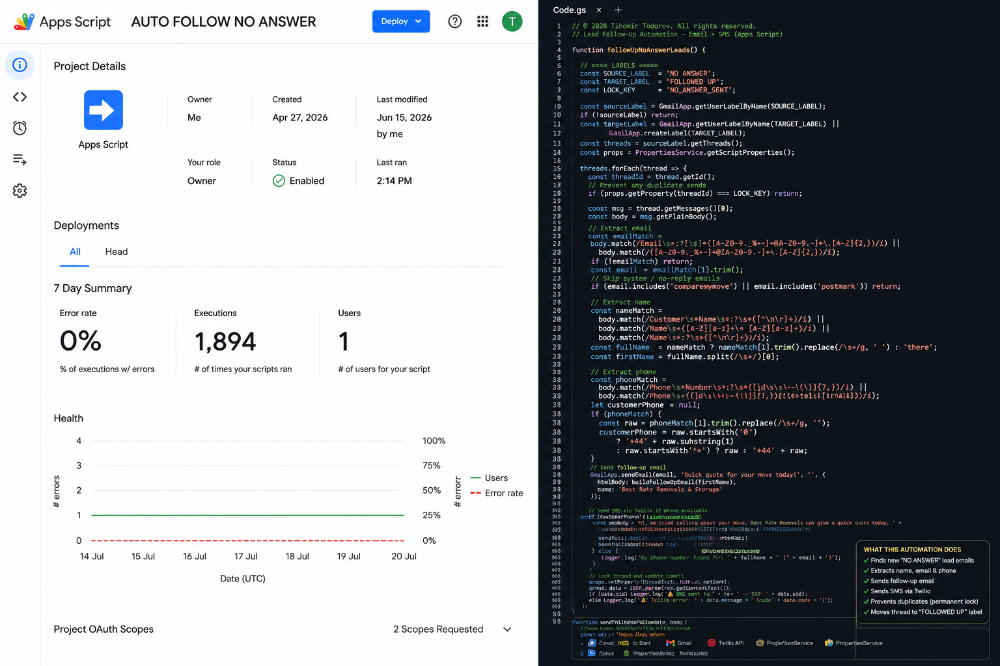
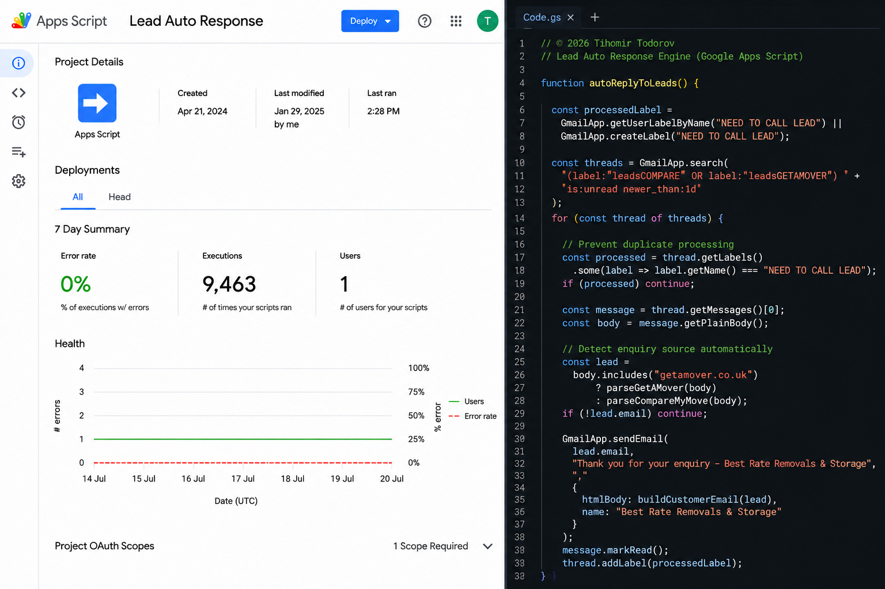
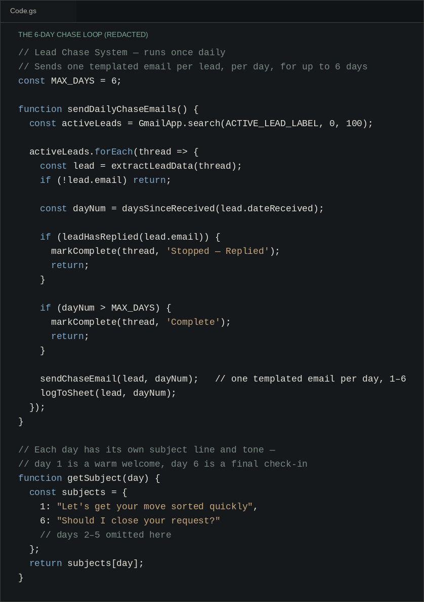

Lead Management
Leads came in from four different sources and I followed them up by hand, which was patchy. I built a tool that replies straight away and then goes back to leads that went quiet.
How it flows
Leads came from four places: Compare My Move, KonnectYou, GetAMover and the company website. I followed them up by hand, so how fast I replied depended on who was free and how busy the day was. Two of the sources even used the same subject line, "New Quote Request", which made sorting them by hand slower still.
I wanted every lead to get a quick, consistent reply whatever the source or time of day. I also wanted to go back to leads that hadn't booked the first time, instead of letting them vanish after one missed follow-up.
It's built in Google Apps Script and runs on Gmail stars. A blue star starts the sequence and a green tick stops it. Each lead source has its own parser. GetAMover and the company website use identical wording, so I tell them apart by sender address instead of subject line. On top of that sits a six-day follow-up sequence, with a Twilio text message on day zero and after calls that go unanswered. Leads that arrive late in the day are pushed back a day, so nobody gets a text at night. Two more scripts run a monthly re-engagement pass. One looks back over the previous two months of leads for a win-back campaign. The other looks at the current month's enquiries but filters on each lead's actual move date, so promotions reach people who are moving in a particular window, whenever they first got in touch.
PropertiesService records what's been sent across all sources, which stops duplicate sends, and a shared daily limit keeps volume predictable. One bug kept coming back: the script would think a lead had replied when they hadn't. Adding a date filter to the Gmail search fixed it, so only genuinely new messages count as replies. Finding the right internal label IDs for Apps Script's search took some trial and error, because Gmail's star types aren't clearly documented.
Every lead now gets a quick, consistent first reply, whichever of the four sources it came from and whatever time it arrived. Leads that don't book straight away are followed up again automatically instead of going cold. I spend less time on admin per lead, and follow-up no longer depends on who's free that day.
Better communication matters more than just being faster. Speed helps, but the leads that book are the ones who feel they're dealing with someone consistent and attentive, not just whoever replied first. The hard part wasn't the automation logic. It was getting the system to follow how the business actually talks to customers.
Engineering Decisions
Under the Hood
// Lead Chase System — runs once daily // Sends one templated email per lead, per day, for up to 6 days const MAX_DAYS = 6; function sendDailyChaseEmails() { const activeLeads = GmailApp.search(ACTIVE_LEAD_LABEL, 0, 100); activeLeads.forEach(thread => { const lead = extractLeadData(thread); if (!lead.email) return; const dayNum = daysSinceReceived(lead.dateReceived); if (leadHasReplied(lead.email)) { markComplete(thread, 'Stopped — Replied'); return; } if (dayNum > MAX_DAYS) { markComplete(thread, 'Complete'); return; } sendChaseEmail(lead, dayNum); // one templated email per day, 1–6 logToSheet(lead, dayNum); }); } // Each day has its own subject line and tone — // day 1 is a warm welcome, day 6 is a final check-in function getSubject(day) { const subjects = { 1: "Let's get your move sorted quickly", 6: "Should I close your request?" // days 2–5 omitted here }; return subjects[day]; }
In the Field



Next